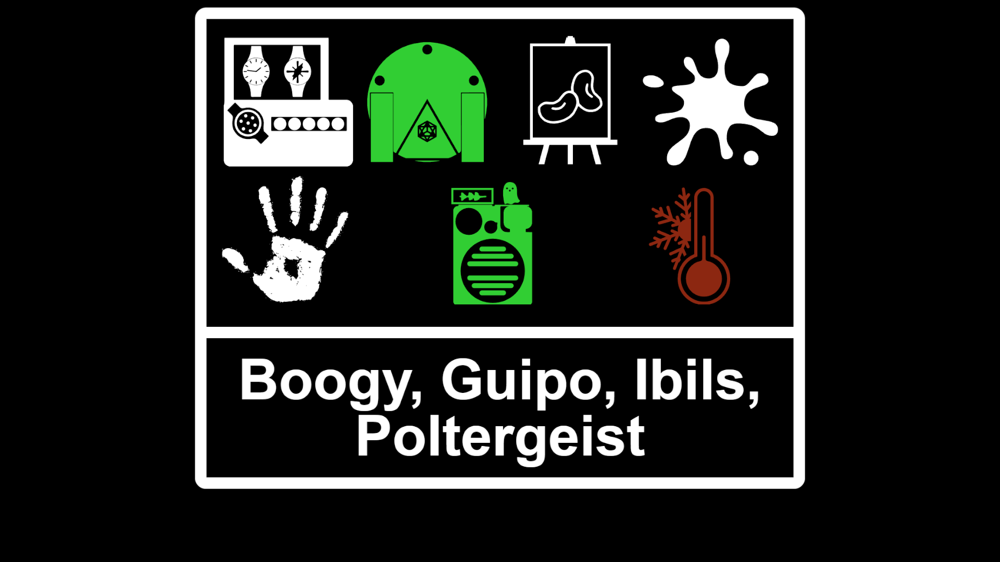
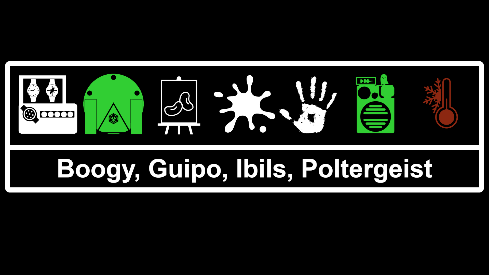

Installation
Cloud Install - Recommended
With this version the overlay will automatically update with no extra effort on your end. Just set and forget!
Local Install
With this version you'll need to check back after each patch to see if there is an update.


-
In OBS add a Browser Source and paste this in the URL:
https://onlypolygon.github.io/Demonologist-Overlay/DemonologistOverlay.html - Set Width to 1390, Height to 1250, and check to enable refresh on activation
- Resize to fit your needs
-
In OBS add a Browser Source and paste this in the URL:
https://onlypolygon.github.io/Demonologist-Overlay/DemonologistOverlay.html - Set Width to 2400, Height to 800, and check to enable refresh on activation
- Resize to fit your needs
- Go to Releases and download the Source Code (zip)
- Extract folder where ever you find most convenient
- In OBS add a Browser Source and choose local file and point it to the DemonologistOverlay.html
- Set Width to 1390, Height to 1250, and check to enable refresh on activation
- Resize to fit your needs
- Go to Releases and download the Source Code (zip)
- Extract folder where ever you find most convenient
- In OBS add a Browser Source and choose local file and point it to the DemonologistOverlay.html
- Set Width to 2400, Height to 800, and check to enable refresh on activation
- Resize to fit your needs